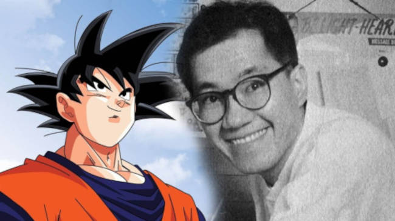

Akira iniciou sua carreira em 1978 com a história Wonder Island publicada na Weekly Shonen Jump, depois fez outros mangás: Highlight Island, seguido por Tomato Girl Detective.
Ele conquistou sua fama com Dr. Slump, publicada semanalmente na Shonen Jump de 1980 a 1984, gerando 18 volumes encadernados, que veio a ser o primeiro anime baseado em uma obra de Toriyama.
Ele provavelmente é mais conhecido por ser o autor da famosa série Dragon Ball. Essa série é conhecida como um dos eixos ao lado de Hokuto no Ken para o que foi conhecido como "a Era Dourada da Jump". Seu sucesso "forçou" Toriyama a trabalhar em Dragon Ball de 1984 a 1995. Durante esse período de onze anos, ele produziu 42 volumes. Cada volume tem uma média de 200 páginas, de maneira que toda trama de Dragon Ball se estende por quase 10 000 páginas. Além disso, o sucesso de Dragon Ball levou a uma série de anime para televisão, filmes de longa-metragem, Video games, e um mega-merchandising.
Voltar para a página inicial.